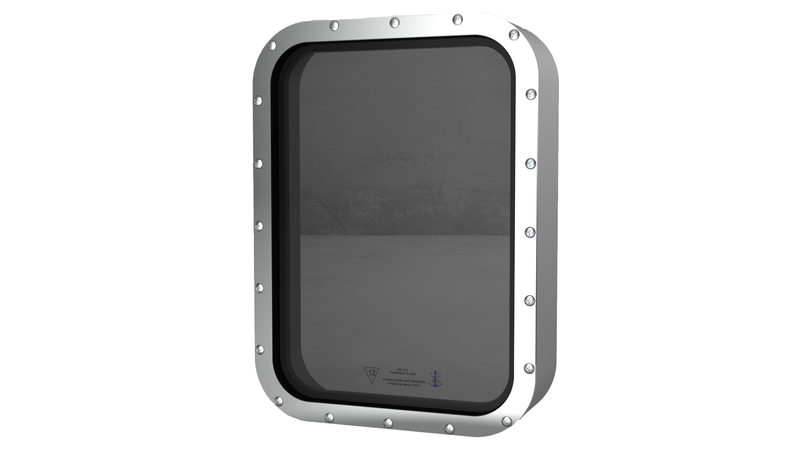
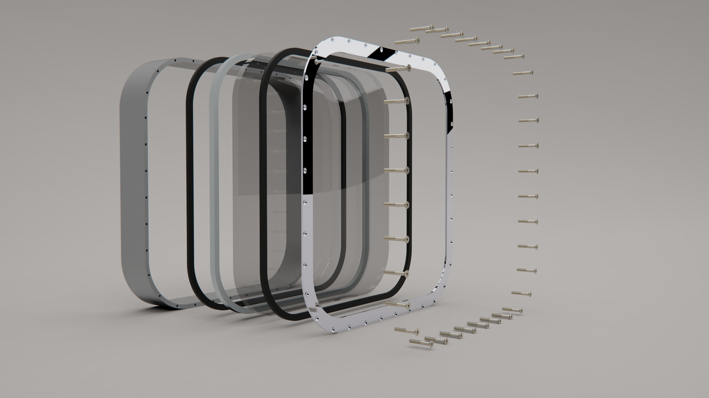

Clear Monolithic Marine Window
A non-opening marine window configuration with clear monolithic glazing, robust frame construction and project-specific installation flexibility.
Interactive 3D view · Drag to rotate · Scroll / pinch to zoom · AR available on supported devices
Overview
Clear monolithic marine window capability for vessel applications where visibility, durable construction and reliable integration are required.
Marine-grade assembly
Frame, glazing, sealing and fastening details can be configured according to vessel requirements and installation method.
Flexible production
The same product family can be adapted with different frame materials, finishes, dimensions and optional accessories.
Available options
Final configuration depends on vessel type, installation area and project requirements.
Product visuals


Datasheets
Karaca Catalog
General product catalog covering ship windows, side scuttles, glazing options and wiper systems.
Download catalog